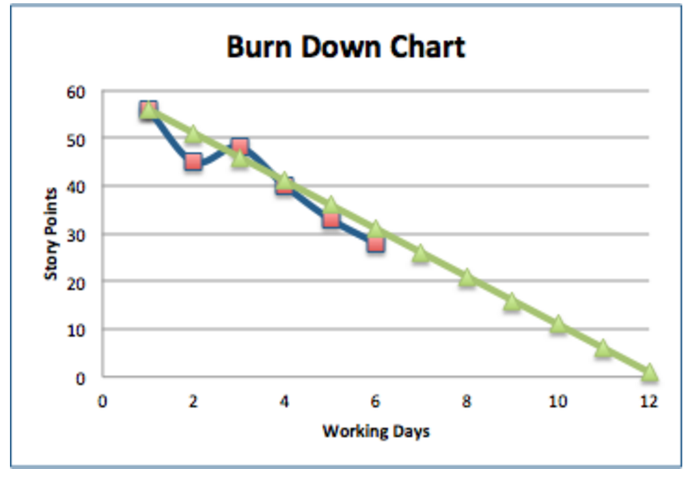

MGT 656 Dry Blessing Coding Team
Project Status Report
November 9, 2015
Sprint 3 update
In Sprint 3, we completed the following activities:
- Every page has HTML5 header and footer elements
- Each list element displays pertinent information about the event: title, date, and how many people are RSVPd etc. It should include the default events that come with the project.
- Every event li element should have an HTML5 time tag that has a datetime attribute equal to the time in ISO 8601 format. The text of the tag should be the datetime in natural language, including the time.
- Adding a link to /events/new with id="new"
- The title for each event is a clickable link to the "detail page" for that event, which should be at /events/, where id refers to the id of the event, e.g. /events/0 would take me to the event with id zero.
- Getting the API at /api/events and retrieve an object with key events containing all events in JSON format.
- The about page has your names, each in a span tag with id attribute set to your class nickname
- The home page has some styling (partially completed activity)
Scrum activities
We did the following scrum activities as a part of this sprint:
We had a
15 min scrum meeting while in class on Wednesday (11/4) to understand what what everyone has done till now, what they will be doing then onwards and if anyone is facing obstacles. Through this meeting, we were able to resolve impediments
such as not knowing how to add new events and styling of elements on the homepage.
We also did a sprint retrospective and released working code to Heroku.
Sprint 3 Retrospective
What went well during the sprint cycle?
- Everyone finished their user stories and did a wonderful job! The website looks very neat.
- Team work helped us a lot in focusing our efforts together to solve very tough problems without needing to wait any further for TA help.
- We finished and successfully ran tests on each additional story we worked on this week.
- Online resources through Google were very helpful all the way to support us finish our objectives on time.
- Besides, every team member had a better understanding of the assignment we had to perform, which helped in the planning of our project.
- We faced a critical error that crashed the server many times whenever Mezyad tried to add a route for the API search function. Shadin put a lot of effort to track the problem and managed to find a solution, which we were missing to add API in
the module route as well.
What went wrong during the sprint cycle?
- Trying to fix many problems such as the application crashing, losing data when merging contents, and not finding a solution on time caused us to waste more time than we planned.
- We should have used branches more (we started using some) and that led to merging issues and confusion within the team. We also should have used pull requests as that would make it easier for one person to merge all the code.
- Also, the style of the home page is not completely done because it was harder than expected plus the merging conflicts.
What could we do differently to improve?
- We will always use branches with pull requests in sprint 4. We should also be using waffle.io more to track what everyone is doing (especially since it is getting difficult to meet in person)
- We need to actively communicate with the TAs in our issues because we have not followed up to solve the issues that we faced during Sprint 3.
Stories to be completed in Sprint 4
| #No |
Story |
Estimate |
Responsible |
| 9 |
Events that are over are not shown |
3 |
Mezyad |
| 16 |
When submitted, the form should be validated. |
5 |
Mezyad/Karen |
| 5 |
An unordered list of events, including their details (LOOK AND FEEL) |
4 |
Susana |
| 14 |
It should have a form for creating events. The form should have attribute method="POST". |
1 |
Karen |
| 19 |
If the form was not valid, I am taken back the form and the errors are shown on the form. |
3 |
Karen |
| 22 |
As an attendee, I can visit the event detail page to RSVP for an event |
3 |
Shadin |
| 20 |
I submit my email address by filling in a form. The form has method="POST" and contains an input element with attributes type, id, and name all set to "email". |
3 |
Shadin |
Burndown chart
We completed a total of 16 story points this sprint against the 20 that we had planned. As our intended velocity is 12 story points a week, we are ahead of that and on track to complete.

Next steps
We will be running team meetings on Wednesday and Friday to discuss our progress on the sprint and have time for feedback.